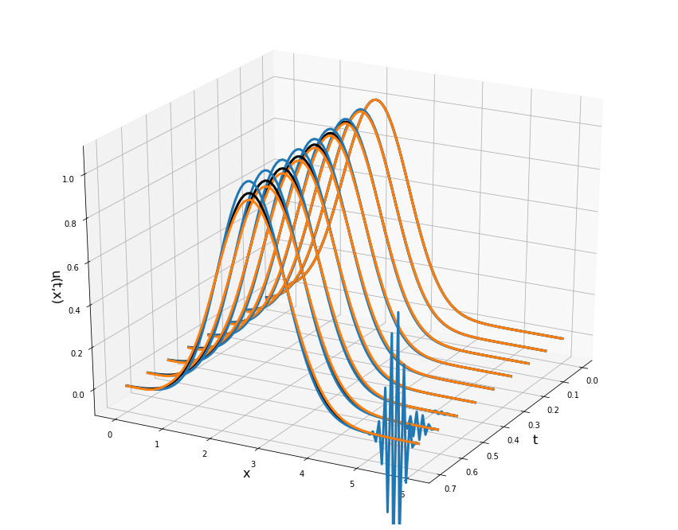

Numerical Methods
An Inquiry-Based Approach With Python

Last Updated: 2021-05-19
Front Matter
Resources
HTML Version of this book: https://NumericalMethodsSullivan.github.io
PDF Version of this book: https://github.com/NumericalMethodsSullivan/NumericalMethodsSullivan.github.io/blob/master/_main.pdf
Print On Demand Version: Available on Amazon (ISBN 9798687369954)
Complete Instructor’s Solutions: available to verified instructors
Google Colab:
- Welcome notebook: https://colab.research.google.com/
- Introduction video: https://www.youtube.com/watch?v=inN8seMm7UI
Jupyter Notebooks: https://jupyter.org/
YouTube Playlist for Python How To: https://www.youtube.com/playlist?list=PLftKiHShKwSO4Lr8BwrlKU_fUeRniS821
Preface
This book grew out of lecture notes, classroom activities, code, examples, exercises, projects, and challenge problems for my introductory course on numerical methods. The prerequisites for this material include a firm understanding of single variable calculus (though multivariable calculus doesn’t hurt), a good understanding of the basics of linear algebra, a good understanding of the basics of differential equations, and some exposure to scientific computing (as seen in other math classes or perhaps from a computer science class). The primary audience is any undergraduate STEM major with an interest in using computing to solve problems.
A note on the book’s title: I do not call these materials “numerical analysis” even though that is often what this course is called. In these materials I emphasize “methods” and implementation over rigorous mathematical “analysis.” While this may just be semantics I feel that it is important to point out. If you are looking for a book that contains all of the derivations and rigorous proofs of the primary results in elementary numerical analysis, then this not the book for you. I have intentionally written this material with an inquiry-based emphasis which means that this is not a traditional text on numerical analysis – there are plenty of those on the market.
Creative Commons
©Eric Sullivan. Some Rights Reserved.
This work is licensed under a Creative Commons Attribution-NonCommercial-ShareAlike 4.0 International License. You may copy, distribute, display, remix, rework, and perform this copyrighted work, but only if you give credit to Eric Sullivan, and all derivative works based upon it must be published under the Creative Commons Attribution- NonCommercial-Share Alike 4.0 United States License. Please attribute this work to Eric Sullivan, Mathematics Faculty at Carroll College, esullivan@carroll.edu. To view a copy of this license, visit https://creativecommons.org/licenses/by-nc-sa/4.0/ or send a letter to Creative Commons, 171 Second Street, Suite 300, San Francisco, California, 94105, USA.

Acknowledgements
I would first like to thank Dr. Kelly Cline and Dr. Corban Harwood for being brave enough to teach a course that they love out of a rough draft of my book. Your time, suggested edits, and thoughts for future directions of the book were, and are, greatly appreciated. Second, I would like to thank Johnanna for simply being awesome and giving your full support along the way. Next I would like to thank my students and colleagues, past, present, and future, for giving feedback and support for this project.
To The Student
The Inquiry-Based Approach
Let’s start the book off right away with a problem designed for groups, discussion, disagreement, and deep critical thinking. This problem is inspired by Dana Ernst’s first day IBL activity titled: Setting the Stage.
Exercise 0.1 * Get in groups of size 3-4. * Group members should introduce themselves. * For each of the questions that follow I will ask you to:
- Think about a possible answer on your own
- Discuss your answers with the rest of the group
- Share a summary of each group’s discussion
Questions:
Question #1: What are the goals of a university education?
Question #2: How does a person learn something new?
Question #3: What do you reasonably expect to remember from your courses in 20 years?
Question #4: What is the value of making mistakes in the learning process?
Question #5: How do we create a safe environment where risk taking is encouraged and productive failure is valued?
This material is written with an Inquiry-Based Learning (IBL) flavor. In that sense, this document could be used as a stand-alone set of materials for the course but these notes are not a traditional textbook containing all of the expected theorems, proofs, code, examples, and exposition. You are encouraged to work through problems and homework, present your findings, and work together when appropriate.
You will find that this text mostly just contains collections of problems with minimal interweaving exposition. It is expected that you do every one of the problems and use the sequencing of the problems to guide your learning and understanding. Much of the code in this book is incomplete, so it is highly encouraged that you have a Google Colab (or Jupyter Notebook) open to work through every problem (though not every problem requires you to write code). Most students find it easiest to have one dedicated Colab notebook (or Jupyter notebook) per section of the book, but some students will want to have one per chapter. You are highly encouraged to write explanatory text into your Google Colab notebooks as you go so that future-you can tell what it is that you were doing, which problem(s) you were solving, and what your thought processes were. In the end, your collection of Colab (or Jupypter) notebooks will contain solutions to every problem in the book and can serve as a reference manual for future numerical analysis problems.
To learn more about Inquiry Based Learning (IBL) go to http://www.inquirybasedlearning.org/about/. The long and short of it is that you, the student, are the one that is doing the work; proving theorems, writing code, working problems, leading discussions, and pushing the pace. The instructor acts as a guide who only steps in to redirect conversations or to provide necessary insight.
You have the following jobs as a student in this class:
- Fight! You will have to fight hard to work through this material. The fight is exactly what we’re after since it is ultimately what leads to innovative thinking.
- Screw Up! More accurately, don’t be afraid to screw up. You should write code, work problems, and prove theorems then be completely unafraid to scrap what you’ve done and redo it from scratch.
- Collaborate! You should collaborate with your peers with the
following caveats:
- When you are done collaborating you should go your separate ways. When you write your solution you should have no written (or digital) record of your collaboration.
- Use of the internet to help solve these problems robs you of the most important part of this class; the chance for original thought.
- Enjoy! Part of the fun of IBL is that you get to experience what it is like to think like a true mathematician / scientist. It takes hard work but ultimately this should be fun!
To the Instructor
If you are an instructor wishing to use these materials then I only ask
that you adhere to the Creative Commons license. You are welcome to use,
distribute, and remix these materials for your own purposes. Thanks for
considering my materials for your course! Let me know if you have
questions, edits, or suggestions: esullivan at carroll dot edu. Furthermore, if you are interested in a full collection of solutions to this book please contact me. I only ask that you don’t share these solutions.
I have authored this version of the book using R-Bookdown [1] as the primary authoring tool. This particular tool mixes the LaTeX typesetting language along with the powerful Markdown language. It also allows for the Python code to be embedded directly into the book so I can run the code, build the figures, and generate output all in one place.
The Inquiry-Based Approach
I have written these materials with an inquiry-based flavor. This means that this is not a traditional textbook. I hardly lecture through any of the material in the book. Instead my classes are structured so that students are given problems to work before class, we build off of those problems in class, and we repeat. The exercises at the end of the chapters are assigned weekly and graded with a revision process in mind – students redo problems if the coding was incorrect, if the mathematics was incorrect, or if they somehow missed the point. The students are tasked with building most of the algorithms, code, intuition, and analysis with my intervention only if I deem it necessary.
Several of the problems throughout the book are meant to be done in groups either at the boards in the classroom or in some way where they can share their work. Much of my class time is spent with students actively building algorithms or group coding. The beauty, as I see it, of IBL is that you can run your course in any way that is comfortable for you. You can lecture through some of the material in a more traditional way, you can let the students completely discover some of the methods, or you can do a mix of both.
You will find that I do not give rigorous (in the mathematical sense) proofs or derivations of many of the algorithms in this book. I tend to lean on numerical experiments to allow students to discover algorithms, error estimates, and other results without the rigor. The makeup of my classes tends to be math majors along with engineering, computer science, physics, and data science students.
The Projects
I have taught this class with anywhere from two to four projects during the semester. Each of the projects is designed to give the students an open-ended task where they can show off their coding skills and, more importantly, build their mathematical communication skills. Projects can be done in groups or individually depending on the background and group dynamics of your class. Appendix B contains several tips for how to tackle the writing in the projects.
Coding
I expect that my students come with some coding experience from other mathematics or computer science classes. With that, I leave the coding help as an appendix (see Appendix A) and only point the students there for refreshers. If your students need a more thorough ramp up to the coding then you might want to start the course with Appendix A to get the students up to speed. I expect the students to do most of the coding the in the class, but occasionally we will code algorithms together (especially earlier in the semester when the students are still getting their feet underneath them).
I encourage students to learn Python. It is a general purpose language that does extremely well with numerical computing when paired with numpy and
matplotlib. Appendix A has several helpful sections for getting students up to speed with Python.
I encourage you to consider having your students code in Jupyter Notebooks or Google CoLab. The advantage is that students can mix their writing and their code in a seamless way. This allows for an iterative approach to coding and writing and gives the students the tools to explain what they’re doing as they code.
Pacing
The following is a typical 15-week semester with these materials.
- Chapter 1 - 1.5 weeks
- Chapter 2 - 1.5 weeks
- Chapter 3 - 2 weeks
- Chapter 4 - 3 weeks
- Chapter 5 - 3 weeks
- Chapter 6 - 3 weeks
If you are starting with Appendix A then you will likely lose time out of the later chapters. Typically I trim Chapters 4 and 6 a bit short – perhaps not covering the power method, traveling wave equations, and the Laplace equation. This buys a bit more time to teach programming at the beginning of the course.
Other Considerations:
- Projects:
I typically assign a project after Chapter 2 or 3, a second project after Chapter 4, and a third project after Chapter 5. The fourth project, if time allows, typically comes from Chapter 6. I typically dedicate two class days to the first project and then one class day to each subsequent project. For the final project I typically have students present their work so this takes a day or two out of our class time.
- Exercises:
I typically assign one collection of exercises per week. Students are to work on these outside of class, but in some cases it is worth taking class time to let students work in teams. Of particular note are the coding exercises in Chapter 1. If your students need practice with coding then it might be worthwhile to mix these exercises in through several assignments and perhaps during a few class periods. I have also taken extra class time with the exercises in Chapter 5 to let the students work in pairs on the modeling aspects of some of the problems.
- Exams:
This is a non-traditional book and as such you might want to consider some non-traditional exam settings. Some ideas that my colleagues and I have used are:
Use code and functions that you’ve written to solve several new problems during a class period.
Give the mathematical details and the derivations of key algorithms.
Take several problems home (under strict rules about collaboration) and return with working code and a formal write up.
No exams, but put heavier weight on the projects.
References
[1] Y. Xie, “Bookdown: Authoring books and technical documents with r markdown.” https://bookdown.org/yihui/bookdown/, 2019.